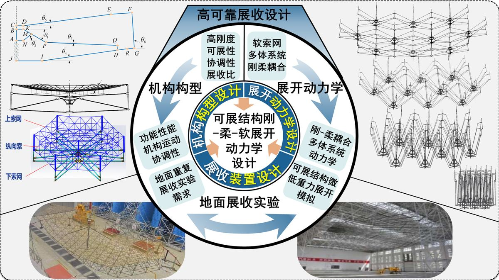
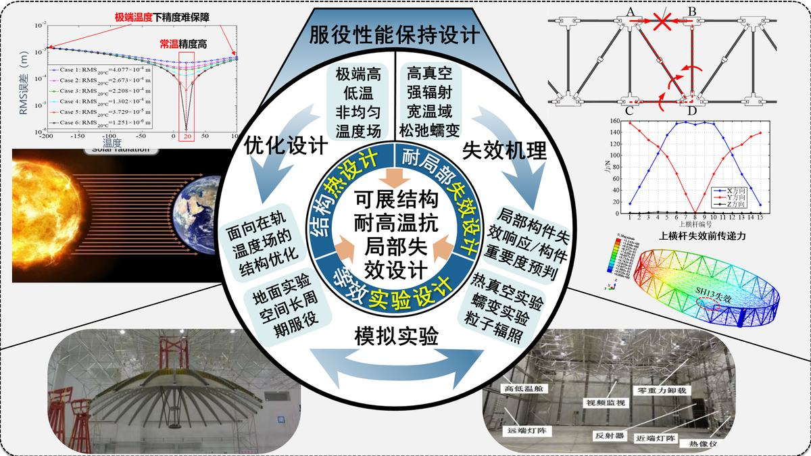

空间可展结构是随航天科技发展而诞生的一种新型宇航结构，是大型航天器有效载荷的主要结构形式，其在发射过程以折叠收拢状态固定安置在运载工具有效载荷舱内，待发射入轨后，按设计要求逐渐展开锁定并保持服役状态。作为国之重器，空间可展结构的设计研发是建设航天强国的牵引性技术。
本项目在国家自然科学基金、国家重大航天计划等资助下，历经十余年攻关，解决了空间可展结构高精度成形设计、高可靠展收设计、服役性能保持设计等关键难题，打通了从自主设计到工程应用的全链条，并成功完成了在轨验证，实现了我国在该领域从追赶到领跑的突破，取得了如下创新成果：
（1）形成了空间可展结构形-性高精度设计方法。系统考虑了几何拓扑、形面精度、构件应力、装配误差等对结构拓扑设计、形面设计、工艺设计的影响，有效解决了传统力密度设计方法找形精度低等难题，将天线设计精度提高一个数量级。成果应用于嫦娥四号鹊桥中继卫星搭载4.2米径向肋天线等，实现了地面测试形面精度优于0.7mm。
（2）发展了刚-柔-软多体系统展开动力学设计理论。有效融合了复杂结构的几何特征、动力学品质需求并考虑地面试验重力卸载影响，实现多链路桁架式天线收展比突破1:10，全系列天线在轨展开成功率达100%。
（3）突破了在轨耐高低温和抗局部构件失效设计技术。实现了结构精度设计与空间热环境的有效匹配，解决了嫦娥四号鹊桥中继卫星搭载天线长周期（≥3年）、宽温域（-200℃-120℃）下稳定服役难题。
项目成果获授权发明专利36件，编制标准6部，发表论文83篇（其中SCI 28篇、EI 20篇）。成果应用于多种空间可展结构设计研发，满足了我国通信导航、气象防灾、深空探测等领域的重大需求，近三年直接经济效益1.3972亿元，带动卫星产业产生间接经济效益超十亿元，经济和社会效益显著。为我国空间可展天线技术步入世界先进行列做出了重要贡献。
以张卫红院士为组长的鉴定委员会认为该项目总体达到了“国际领先”水平。2023年，项目获得天津市技术发明一等奖。
空间可展结构具有尺度大（几十至上百平方米）-精度要求高（毫米至亚毫米级表面精度）、构件多（数千组件）-需在轨可靠展开、地面试验-极端环境（-200℃~120℃）长时服役等特点。这类兼具机构和结构特性的装备设计面临结构精确成形、机构顺利展开、在轨性能保持等关键问题，本项目通过机构-结构设计平衡与兼顾“结构成形-机构展开-性能保持”需求，实现了空间可展结构表面高精度创成与服役性能高效保持，主要设计创新点如下。
设计创新点1：提出了空间可展结构形-性高精度设计方法（如图1），系统考虑了几何拓扑、形面精度、构件应力、装配误差等对结构成形精度影响，将可展天线表面设计精度提高一个数量级。实现了复杂索网表面拓扑自动化设计、大型柔性支撑索网形面高精度设计、铰接可展结构装调工艺设计等创新。成果应用于我国嫦娥四号鹊桥中继卫星等重大科技专项，助力4.2m口径伞天线地面测试形面精度优于0.7 mm。
有形化成果：授权发明专利9件、发表高水平论文17篇，编制标准2项。
图1 空间可展结构高精度成形设计
设计难点与挑战：空间可展结构尺寸和形面精度是其结构设计的重要指标，以可展天线为例：天线反射面口径和形面精度是保证其频段、增益和功率等电性能的重要依据。口径大的天线能够发射大量的高分辨率数据，提高微弱信号接收信噪比；高反射面精度可实现高工作频段、宽频带和高增益。但口径和形面精度二者是矛盾的，口径越大的结构形面精度就越难保障。1）如何在尺寸/材料/载荷限制下快速高效生成可实现高频段、高增益、高通量等电磁性能需求的反射面构型是可展天线表面拓扑设计的首要难题。反射面精度要求与结构尺寸之比远超一般结构精度范围。成千上万索段拉力下桁架发生变形，进而影响索网张力分布，二者存在强烈耦合效应。2）如何揭示柔性支撑张力结构零应力状态（结构放样依据）与成形状态间的映射机理是结构高精度形面设计的关键难点。可展结构包含铰链、杆件、锁定释放机构、反射面组件等众多构件，装配阶段杆件尺寸偏差、铰链间隙、杆件变形、装配应力等影响结构形面精度和指向精度，结构精度要求（亚毫米级或更高）高于组件尺寸叠加误差。3）如何实现大量组件微应力高精度装调和装配工艺优化设计，是保证结构成形精度的核心。
图2 网面拓扑自动化设计方法
设计创新点：
1）提出结构表面拓扑自动化设计方法。
针对大型空间可展结构广泛使用的轻质索网，本项目创新提出基于图论的网面拓扑描述与网格自动化设计方法（如图2），根据天线电磁性能需求、反射面方程、满足形面误差的网格最大允许尺寸、背架与索网连接点限制，实现任意索网面几何构型自动化生成，并基于网面和可展桁架拓扑实现索-桁连接方式优化设计，大幅提升网面张力均匀性，保障网面索段热变形稳定性。开发了网面拓扑自动化设计平台，完成了环形桁架式、径向肋式、构架式等多种形式可展天线网面设计，有效解决复杂功能形面难设计、网面拓扑无法自动化生成等技术难题，提高了大型天线网面设计效率。
图3 柔性支撑索网找形设计理论
2）形成柔性支撑索网找形设计理论。
提出了柔性支撑索网找形设计理论（如图3），更新了本领域经典力密度方法，解决了商业软件无法用于柔性支撑索网高精度设计的瓶颈问题。建立了包含欧拉伯努利梁、三维弹性体铰链、索单元本构的柔性杆件-柔性铰链-柔性索网一体化静力平衡模型，揭示了支撑桁架柔性变形与柔索体系静力平衡态映射关系，实现了柔性支撑索网综合找形及网面预应力合理配置，针对数千索段的大型网面可高效求解目标形面精度对应索段放样长度。本项目形成的索网设计方法将网状天线形面设计精度有效提高1个数量级。成果应用于我国嫦娥四号鹊桥中继卫星搭载4.2米口径天线，地面测试形面精度优于0.7mm。
图4 柔性支撑索网找形设计理论
3）创新铰接可展结构高精度装配工艺设计技术。
提出航天异构铰链间隙控制和基于均匀性装配的零件配对方法；攻克可展机构重复展开精度保障瓶颈问题；形成基于装配校准的固面可展天线形面装调方法，创新设计了高精度装调专用装置、基于多神经网络的高精度装调算法和工艺（如图4），可根据形面测量结果优化设计装调工艺参数，实现结构亚毫米级精度快速高效装调。相关技术应用于海洋二号、天问一号卫星搭载的多类型空间可展结构高精度装配，有效保证了产品形面精度和指向精度。
设计创新点2：创新提出刚-柔-软多体系统展开动力学设计方法（如图5），有效融合了复杂结构几何特征、动力学品质需求并考虑地面试验重力卸载影响。提出功能驱动的可展机构构型设计新方法；针对多链路桁架机构在空间高低温、微重力环境下与柔索相互耦合的复杂展开过程，突破刚-柔耦合索-桁机构展开分析与设计技术；设计了可展天线展开过程主动高效重力卸载装置。成果应用于多链路桁架式天线展开设计，助力机构收展比突破1:10，全系列天线在轨展开成功率达100%。
有形化成果：授权发明专利19件、发表论文42篇，编制标准1项。
图5 空间可展结构刚-柔-软多体系统展开动力学设计
设计难点与挑战：空间可展结构构型设计关系到其能否在有限收拢体积下实现最大展开面积，形成理想功能形面，并完成可靠展开任务。1）如何在收展比、机构运动特性、材料/载荷限制下实现高刚度、高可靠性机构创新设计是保障天线顺利展开的首要前提。可展结构能否在轨一次顺利平稳展开至关重要，一旦展开失败将导致整星通讯功能丧失，引发整个卫星任务失败。2）如何准确进行索-桁复杂机构展开过程动力学分析及驱动设计是保障可靠展开的基础难题。空间可展结构运动部件多、运动副多、运动范围大，且需在太空微低重力环境下展开。为确保在轨顺利展开，降低故障率，需在地面进行微低重力等效展开试验。3）如何设计微低重力模拟装置，以开展微低重力环境下展开过程的准确模拟是保障天线在轨顺利展开的核心挑战。
设计创新点
1）提出功能驱动的可展机构构型设计新方法。
提出模块化、高表面精度、高收纳比可展机构创新设计方法（如图6）。以期望运动轨迹为目标开展逆向设计，以机构运动协调性为约束实现正向设计。阐明模块化空间可展机构设计原理与方法，揭示可展机构构型、几何、材料、载荷等设计因素与机构功能性能映射机理。有效解决了复杂功能形面难设计、机构展开运动不协调、期望运动轨迹难实现等问题，为空间可展结构构型创新和机构详细设计提供理论基础。成果应用于多链路桁架式可展天线设计，机构收展比突破1:10。
图6 多链路桁架式可展天线构型设计
2）突破刚-柔-软多体系统展开动力学设计技术。
提出了软索网展开分析和桁架刚-柔耦合展开动力学分析与设计方法（如图7），实现了包含数千个运动构件的全尺寸、全链路大型反射器展开过程刚-柔-软多体系统动力学分析与设计。攻克索网时变张力计算瓶颈问题：有效捕获天线展开过程大量索段松弛/张紧态实时切换，可快速实时求解各拓扑索网展开时变张力，为索-桁机构展开过程驱动设计提供准确阻力数据。突破多链路桁架机构展开驱动设计难题：建立叠加杆件柔性和桁架大范围运动的桁架刚-柔耦合多体动力学模型，实现刚-柔-软多体系统展开过程动态耦合，为刚-柔-软多体系统展开驱动设计和展开过程有效控制提供理论基础。成果应用于桁架式天线展开分析，计算结果与实测数据相比准确率达80%，有效保证了桁架式天线地面试验和在轨展开成功率。
图7 刚-柔-软多体系统展开动力学设计
3）创新设计了空间可展结构展开试验微低重力模拟装置。
创新设计了吊丝主动水平定位与运动的重力补偿方案，利用桁架各节点水平位移成比例且与展开姿态存在确定关系的特点，采用电机驱动获得吊丝水平定位与运动，实现展开过程桁架节点位置精确跟随，消除了运动中吊丝非铅锤效应的原理误差，设计研制了可展结构多索悬吊式重力卸载装置（如图8），实现了多类型可展天线展开过程微低重力高效模拟。针对国内首款圆形柔性太阳翼地面重复展收试验需求，设计研制了单套重载高精度加载装置和成套压紧设备，开发了太阳翼多点同步加载控制软件，可实现单点压紧力（≤6000N）加载精度优于1‰，多点压紧力加载同步性偏差小于3‰，保证了收拢压紧效果和太阳翼表面电池片安全。设备应用于“天问二号”探测器国内首款圆形柔性太阳翼重复展收试验，将单次收拢压紧时间由原有数小时减小到十几分钟，由数名人员操作减少到单人操作，大大提高了重复展收试验效率。获天津新闻“奋斗者，正青春”节目报道（如图8）。
图8 空间可展结构展收试验装置设计
设计创新点3：发展了空间可展结构耐高低温和抗局部构件失效设计方法，实现了结构精度设计与空间热环境的有效匹配（如图9）。提出面向太空极端环境的可展结构优化设计方法，形成关键构件失效响应及构件重要度预判技术，攻克极端环境下结构关重件天地等效测试与评价难题，设计并研制高低温力学测试、高低温形面精度测试、高低温展开试验等专用测试系统及设备20台/套。成果解决了嫦娥四号鹊桥中继卫星搭载天线长周期（≥3年）、宽温域（-200℃-120℃）下稳定服役难题。
有形化成果：授权发明专利9件、发表论文24篇，编制标准1项。
图9 空间可展结构耐高低温抗局部失效设计
关键技术难点与挑战：高真空、强辐射、宽温域等极端环境下的结构服役性能是空间可展结构设计重点关注的问题。1）如何开展面向空间服役环境的结构设计、性能分析、仿真模拟、等效测试是保障空间可展结构在轨性能稳定性面临的重要挑战。空间可展结构构件众多，各组件作用相互耦合，恶劣太空环境中周期性高低温、电磁辐射、外物冲击以及长周期服役下材料变异、构件裂纹、折断等都会导致局部构件失效，进而引发形面精度劣化、结构刚度变差、频率特性偏离原始设计等问题，严重影响结构正常服役。2）如何有效获知局部构件失效对结构整体性能影响，从而开展构件重要性预判和冗余设计是提高可展结构在轨服役性能和寿命的必要手段。可展结构在地面装调，太空极端环境下服役，空间环境下材料/组件/结构的热特性、疲劳、蠕变、松弛等行为与地面测试差异较大。3）如何设计极端环境下关键材料和构件的等效测试系统，是保障可展结构在轨性能稳定性需要攻克的关键技术难题。
设计创新点：
1）提出面向在轨热环境的结构预应力优化设计方法。
本项目建立了包含特征轨道位置的结构温度场数据库，形成了面向在轨非均匀温度分布的空间可展结构预应力优化设计方法（如图10）。揭示了常温设计参数与在轨温度场下天线表面精度映射机理，阐明了极端服役环境天线性能演化规律，实现了空间可展结构精度设计与在轨热环境有效匹配。成果应用于周边桁架式天线、径向肋式天线结构优化设计，实现天线形面在轨精度波动低于0.2 mm，助力空间可展天线在轨性能高效保持。
图10 空间可展结构在轨热设计
2）突破空间可展结构抗局部构件失效设计技术。
针对恶劣太空环境和长周期服役可能引发的构件失效问题，探明了局部构件失效对空间可展结构形面精度、结构刚度、频率特性等的影响规律，开发了构件失效响应分析算法，可高效仿真关键部组件失效对结构服役性能的影响。提出了可展天线构件重要性预判准则，对局部失效可能引发的反射面精度劣化、连续失效导致的结构功能丧失等进行了等效模拟，通过设计结果与失效分析的迭代优化，实现了空间可展结构抗局部构件失效的冗余设计（如图11）。
图11 空间可展结构抗局部构件失效设计
3）设计了关键组件和结构天地等效测试系统。
设计了关键材料和构件太空服役环境等效测试系统，成功应用于某空间天线碳纤维杆件的热真空测试，探明结构在空间环境下可能存在的缺陷，并进行了热真空处理，提高了在轨应用可靠性；攻克了高温环境下核心弹簧部件的松弛蠕变测试难题，实现高温力热耦合的弹簧蠕变形和蠕变速率曲线精准测试，依据测试结果预判了10年以上蠕变量小于0.06mm，保障了弹簧部件长期在轨稳定服役；提出了高低温展开机构锁定试验方法，应用该方法开展某型号天线展开机构极端环境锁定试验，通过多次重复试验保证了机构在轨成功锁定；形成了宽温域下组件热变形和结构形面精度测试技术，可用于预测和评价结构在轨形面精度和整体刚度。设计研发了关键部组件和结构天地等效测试系统，保障了空间可展结构在轨稳定性和服役寿命。
图12 关键组件天地等效测试系统
项目组主持了我国目前所有大型可展天线的型号研制任务，设计了系列化天线产品，与国外同类技术相比具有明显优势，性能对比如表1。
表1 国内外同类可展天线设计技术及产品性能对比



空间可展结构成形-展开-性能保持,大型航天器载荷关键结构
可展结构的工程美学
间接服务航天工程
航天结构技术与装备的体系化输出
航天强国建设的牵引性技术